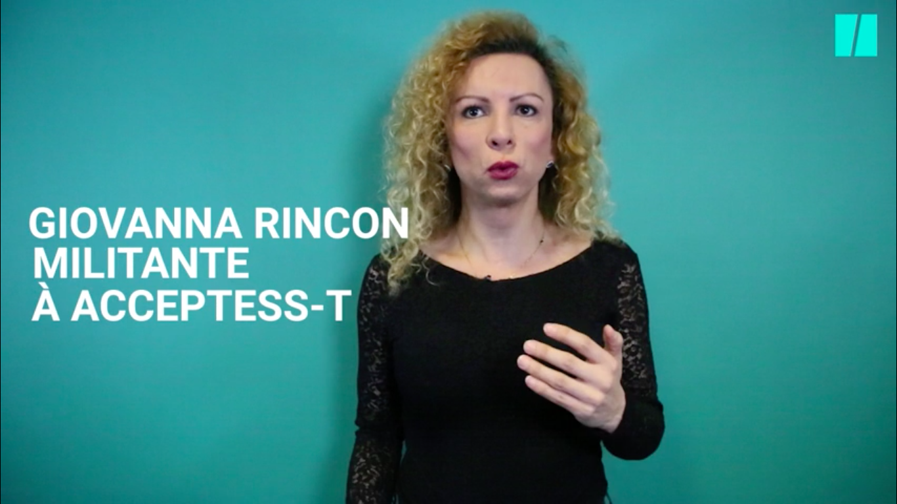

Les nommé·e·s
Qui recevra l’OUT d’or de la rédaction engagée, celui du coup de gueule ou du documentaire ? Qui sera récompensé athlète LGBTI de l’année ? Quelle création artistique sera distinguée cette année ? Quelle sera la personnalité LGBTI du public ? Découvrez la shortlist !
-
Dans la catégorie « Chaîne YouTube »
La communauté LGBTI se sent parfois oubliée des médias. Elle prend donc la parole sur YouTube pour échanger témoignages, conseils, informations.Viens voir le docteurLa santé des personnes LGBTI, pour lesquelles un rendez-vous médical peut s’avérer être une expérience fort éprouvante, est souvent un angle mort des médias. Animée par Marielle, Pierrine et Elsa, professionnelles de la santé, “Viens voir le docteur” est une chaîne d’information médicale qui aborde avec pédagogie la santé des personnes queers (PMA, homosexualité et suicide, etc.).Mx CordéliaMx Cordélia anime deux chaînes. La première “Cordélia aime” débusque et partage des recommandations de livres queer, tandis que la seconde “Princ(ess)e” est un espace de débat et de réflexion sur les questions "sexo" des minorités de genre et sexuelles.Lez TalkCarla et Louisiane, l’une espagnole et lesbienne, l’autre française et bisexuelle, sont en couple. Sur un ton enlevé, souvent léger, intime et drôle à la fois, elles partagent leurs expériences et répondent aux questions de leurs nombreuses abonnées, pour la plupart des ados, lesbiennes ou bies, qui trouvent ici des récits qui leur ressemblent.Laura BadlerFemme trans, Laura Badler partage expérience et conseils sur la transidentité sur la chaîne qui porte son nom.Bonsoir TinoCette chaîne est animée par un jeune homme pansexuel engagé contre l’homophobie et les clichés, qu’il s’efforce de dénoncer. -
Dans la catégorie « Coup de gueule »
Les journalistes, chercheur·se·s, militant·e·s, personnalités qui ont eu le courage de hausser le ton, cette année, pour dénoncer les LGBTIphobies.Muriel RobinHumoriste bien connue des Français·e·s, Muriel Robin s’est insurgée, sur le plateau de C à vous (France 5), en mars 2018, contre le déversement haineux et lesbophobe dont sa compagne, Anne Le Nen, et elle-même ont fait l’objet.Giovanna RinconMilitante infatigable pour les droits des trans, Giovanna Rincon est notamment apparue en mars 2018 dans une vidéo du Huffington Post qui dénonce avec vigueur un sujet encore trop ignoré par les médias : l’insécurité des femmes transgenres dans l’espace public.Emilie MazoyerJournaliste et chroniqueuse, Émilie Mazoyer est une alliée des luttes des minorités LGBTI. Dans son émission Shuffle (Europe 1), elle a, en septembre 2017, pris fermement position contre la censure des affiches du film "Nos Années folles" à Senlis.Sam BourcierSociologue trans, Sam Bourcier est un habitué des prises de position fermes et engagées. En février 2018, lors du débat "Transgenres, parcours de combattant-e-s" dans l’émission Grand écran (LCP), il s’est insurgé contre la médicalisation systématique des personnes trans et non-binaires.Baptiste BeaulieuMédecin généraliste et romancier, Baptiste Beaulieu est très actif sur les réseaux sociaux. En mars 2018, il a signé une tribune dans L'Obs qui tord le cou aux préjugés concernant l’existence d’un supposé "lobby LGBT". il donne la parole à des personnes LGBTI, restituant ainsi la réalité des vécus et des discriminations, agressions, auxquelles sont soumises les personnes LGBTI. "J'ai fait témoigner le 'lobby LGBT', celui qui m'a permis de ne pas mourir", écrit-il. -
Dans la catégorie « Création artistique »
Un an après les victoires ex-aequo d’"Ouvrir la voix" d’Amandine Gay et de "120 battements par minute" de Robin Campillo, l'OUT d’or de la création artistique aspire, plus que jamais, à célébrer une œuvre qui, par son originalité, sa dimension pédagogique (pour certaines) et les questions de société qu’elle met en perspective, imprègne les imaginaires collectifs de représentations plurielles des personnes LGBTI."Un Couteau dans le coeur", de Yann GonzalezCe long-métrage, un thriller à l’esthétique résolument queer, met en scène une Vanessa Paradis en productrice lesbienne de films porno gays, traquée par un mystérieux tueur. Présenté en compétition au Festival de Cannes en mai 2018, il sortira en salles le 27 juin 2018."Aria" d’Emilie JouvetDans ce documentaire autobiographique présenté en avant-première lors du festival "Loud and Proud" à Paris en juillet 2017, Émilie Jouvet a donné la parole aux premières concernées : les couples de lesbiennes embarquées dans des parcours de PMA à l’étranger. Cinq ans d’aller-retour entre Paris et Bruxelles, de doutes, de fragilités, de sentiment de solitude, sur fond de reculades politiques et de rhétorique violente émanant de mouvements réactionnaires.Phia Ménard (metteuse en scène)L’artiste et performeuse trans s’est illustrée cette année dans de nombreuses représentations : "Et in arcadia ego", "Les Os noirs", ou encore "Les Contes immoraux", explorant toujours avec brio et intensité, la mort, l’identité, la transformation... Elle sera cet été à Avignon avec "Saison sèche", spectacle inédit, alors que le thème de la 72e édition du festival est "Gender"."Fiertés", de Philippe FauconLa banlieue, le sida, les jeunes immigrés ou encore l’islamisme radical sont les sujets au coeur de l’oeuvre de Philippe Faucon, césarisé trois fois en 2016 pour "Fatima". Avec "Fiertés" (Arte, mai 2018), il raconte, en trois épisodes de 52 minutes, les grandes étapes de la lutte pour l’égalité des droits, depuis l’élection de François Mitterrand et la dépénalisation de l’homosexualité au mariage et à l’adoption pour tou·te·s, à travers le personnage de Victor et de son compagnon Serge, qui vit avec le VIH."Plaire, aimer et courir vite" et "Ton Père", de Christophe HonoréAncien critique de cinéma, réalisateur, scénariste et auteur, Christophe Honoré signe, avec "Plaire, aimer et courir vite", sorti le 10 mai 2018, une grande histoire d’amour, un amour à vivre vite. Dans son livre "Ton père" (éditions Mercure de France, septembre 2017), il s’adresse à sa fille, décrit sa famille hors cadre et pourtant si banale et offre un témoignage puissant sur la violence des débats sur le mariage pour tous."Cure", d'Eddy de PrettoDans la lignée de Chris(tine and The Queens), un artiste pop qui redessine les lignes : entre les genres (rap, chanson française…) et le genre. Les textes coup de poing d'Eddy de Pretto racontent la masculinité toxique, l’injonction à la virilité et l’éclosion d’un jeune homme sexué dans ce grand écart perpétuel entre ce que la société exige et soi."Bed Work" et "Haunted Lives", de Soufiane AbabriArtiste franco-marocain, Soufiane Ababri nous invite dans sa chambre à coucher et explore la figure masculine et la sexualité homosexuelle dans ses dessins. Après "Bed Work", l'exposition "Haunted Lives" est actuellement présenté à la Galerie Praz-Dellavade à Paris jusqu’au 16 juin 2018. -
Dans la catégorie « Dessin engagé »
Quentin ZuttionAncien membre de la "tribu" MademoiZelle, Quentin Zuttion, alias Monsieur Q., collabore depuis peu avec le mensuel Néon. C’est avec délicatesse qu’il aborde dans chacune de ses planches la diversité des corps par le truchement des grandes thématiques queers (le coming out, la sexualité, l’homoconjugalité, etc.). Son deuxième album, Chromatopsie, paraît le 14 juin 2018 aux éditions Lapin.Timothé Le BoucherNé en 1988, Timothé Le Boucher compte déjà à son actif trois albums très remarqués : "Skins Party" (Manolosanctis, 2011), "Les Vestiaires" (La Boîte à bulles, 2014) et "Ces jours qui disparaissent" (Glénat, septembre 2017). À chaque fois, il attache une grande visibilité aux personnages LGBTI, sans que cela soit forcément au centre des histoires. Il imagine notamment dans son dernier album un avenir où les genres ont totalement dépassé la binarité homme-femme. Muriel DouruÉcologie, défense animale, féminisme, homoparentalité... : sur ses blogs et dans ses livres, l’illustratrice Muriel Douru touche à tous les grands thèmes qui dessinent ses engagements. Son dernier ouvrage, "Chroniques d’une citoyenne engagée", paru en 2017 aux éditions Hugo image, compile des centaines de billets d’actualité dessinés sur les égoïsmes mais aussi les aspirations de notre société.Shyle ZalewskiTrès actif·ve sur les réseaux sociaux, Shyle Zalewski a fait des strips autobiographiques sa spécialité, formats où iel met en scène sa vie – surtout sentimentale et sexuelle – de personne queer au genre fluide. L’occasion aussi d’aborder des thèmes plus profonds, comme les relations sociales, à chaque fois pour inviter à sortir des cases toutes faites. Geek et punk assumé·e, Shyle a aussi un projet musical (dont iel réalise les clips), Edam Edam. Dernier album paru : "Super Z poche" (Pantypop, janvier 2018).PochepAuteur régulier de La Revue dessinée, Topo et Fluide Glacial, Pochep est aussi un artiste engagé, à l’origine notamment des deux tomes du "Projet 17 mai", qui réunissaient des dessinateurs contre l’homophobie. Dans son nouvel album, "Vieille peau" (éditions Fluide glacial, octobre 2017), il traite avec beaucoup d’autodérision d’un thème très rarement visible, le vieillir gay, et interroge le rapport au corps et à la séduction quand on passe la barre des 50 ans.Lisa MandelHabituée du festival d’Angoulême, la dessinatrice et auteure de "Princesse aime princesse" est devenue collaboratrice régulière du Monde. En novembre dernier, elle a publié sur son blog une série de reportages dessinés sur la vie quotidienne des LGBTI au Liban, à la rencontre de celles et ceux qui vivent leur sexualité dans une relative liberté – malgré une loi qui punit toujours "l’acte pervers" – et la menace de descentes de police dans les lieux communautaires. Dernier album paru : "Prézizidentielle", avec Julie Pagis (Casterman, mai 2017).
Muriel DouruÉcologie, défense animale, féminisme, homoparentalité... : sur ses blogs et dans ses livres, l’illustratrice Muriel Douru touche à tous les grands thèmes qui dessinent ses engagements. Son dernier ouvrage, "Chroniques d’une citoyenne engagée", paru en 2017 aux éditions Hugo image, compile des centaines de billets d’actualité dessinés sur les égoïsmes mais aussi les aspirations de notre société.Shyle ZalewskiTrès actif·ve sur les réseaux sociaux, Shyle Zalewski a fait des strips autobiographiques sa spécialité, formats où iel met en scène sa vie – surtout sentimentale et sexuelle – de personne queer au genre fluide. L’occasion aussi d’aborder des thèmes plus profonds, comme les relations sociales, à chaque fois pour inviter à sortir des cases toutes faites. Geek et punk assumé·e, Shyle a aussi un projet musical (dont iel réalise les clips), Edam Edam. Dernier album paru : "Super Z poche" (Pantypop, janvier 2018).PochepAuteur régulier de La Revue dessinée, Topo et Fluide Glacial, Pochep est aussi un artiste engagé, à l’origine notamment des deux tomes du "Projet 17 mai", qui réunissaient des dessinateurs contre l’homophobie. Dans son nouvel album, "Vieille peau" (éditions Fluide glacial, octobre 2017), il traite avec beaucoup d’autodérision d’un thème très rarement visible, le vieillir gay, et interroge le rapport au corps et à la séduction quand on passe la barre des 50 ans.Lisa MandelHabituée du festival d’Angoulême, la dessinatrice et auteure de "Princesse aime princesse" est devenue collaboratrice régulière du Monde. En novembre dernier, elle a publié sur son blog une série de reportages dessinés sur la vie quotidienne des LGBTI au Liban, à la rencontre de celles et ceux qui vivent leur sexualité dans une relative liberté – malgré une loi qui punit toujours "l’acte pervers" – et la menace de descentes de police dans les lieux communautaires. Dernier album paru : "Prézizidentielle", avec Julie Pagis (Casterman, mai 2017). -
Dans la catégorie « Documentaire »
L'Autre mère, de Mathilde Guermonprez (Arte radio)Diffusé le 11 octobre 2017 Dans ce documentaire très personnel, Mathilde Guermonprez raconte son difficile parcours pour adopter l'enfant qu'elle a eu avec sa compagne."Pourquoi nous détestent-ils, nous les homosexuels ?" d'Olivier Nicklaus et Gurwann Tran Van Gie (Planète+)Diffusé le 4 décembre 2017 dans la deuxième saison de "Pourquoi nous détestent-ils ?"
Réalisateur, scénariste et comédien aux origines bretonne et vietnamienne, Gurwann assume son homosexualité depuis qu'il a 20 ans. Tout en revenant sur son parcours, il explore dans ce documentaire les racines de l'homophobie."Il était une fois la PMA" et "Coming In", d’Élodie FontDiffusés respectivement du 25 janvier au 21 février 2018 sur Cheek Magazine et le 17 mai 2017 sur Arte radio
Série de cinq podcasts à la découverte d’un univers méconnue, "Il était une fois la PMA" décrypte tout un jargon et, surtout, va à la rencontre de couples de lesbiennes qui ont dû traverser ce parcours de la combattante sans en revenir tout à fait indemnes.
Dans "Coming In", Élodie Font fait, à la première personne, le récit de la prise de conscience de son lesbianisme."Chasse à l’homme en Tchétchénie", d’Élise Menand, Philippe Maire et Benoît Sauvage (France 2)Diffusé le 23 novembre 2017 dans Envoyé Spécial
Paris, Grozny, Saint-Pétersbourg. Des planques françaises aux prisons tchétchènes, ce reportage met des images sur les récits des réfugié.e.s et tente d’établir l’ampleur des persécutions dans ces camps de concentration. Les ONG estiment à plus d’une centaine le nombre de victimes."Quand la création raconte le sida", de Didier Roth-Bettoni (France culture)Réalisé par Nathalie Battus
Diffusé du 9 au 12 avril 2018 dans LSD (La Série documentaire)
Ce documentaire en quatre épisodes raconte les années sida à partir d'archives rares. "Plus qu’aucune autre maladie, le sida a produit un art de l’intime, un art autofictionnel où des créateurs de toutes disciplines ont utilisé leur vécu le plus personnel de la maladie pour faire œuvre, non seulement de témoignage mais aussi d’affirmation, de combat et de refus de la fatalité", note France culture. -
Dans la catégorie « Enquête / reportage »
 "Homos en quête d'asile : tout le monde n'est pas logé à la même enseigne", d'Anne Laffeter (Les Inrockuptibles)"Persécutés dans leurs pays, les demandeurs d’asile LGBT se heurtent de plus en plus à la difficulté de trouver refuge en France. Voici les histoires de Katia la Tchétchène, Ghalia la Camerounaise et Berg l’Egyptien, tous trois en attente d’un statut de réfugié. Mais pas avec les mêmes chances de l’obtenir." Publié le 1er mai 20118
"Homos en quête d'asile : tout le monde n'est pas logé à la même enseigne", d'Anne Laffeter (Les Inrockuptibles)"Persécutés dans leurs pays, les demandeurs d’asile LGBT se heurtent de plus en plus à la difficulté de trouver refuge en France. Voici les histoires de Katia la Tchétchène, Ghalia la Camerounaise et Berg l’Egyptien, tous trois en attente d’un statut de réfugié. Mais pas avec les mêmes chances de l’obtenir." Publié le 1er mai 20118 "L'enfer des prisons égyptiennes pour les gays et trans", de Martin Roux (Slate)"Derrière les murs des prisons égyptiennes, l'humanité des personnes LGBTI est bafouée. Elles sont victimes d’humiliations permanentes, de torture et de viol." Publié le 3 janvier 2018
"L'enfer des prisons égyptiennes pour les gays et trans", de Martin Roux (Slate)"Derrière les murs des prisons égyptiennes, l'humanité des personnes LGBTI est bafouée. Elles sont victimes d’humiliations permanentes, de torture et de viol." Publié le 3 janvier 2018 "Être femme et gay au Sénégal : les lesbiennes cherchent leur place", de Sarah Elzas (RFI)"Au Sénégal, comme dans beaucoup de pays dans le monde, l’homosexualité est un sujet tabou [...]. Malgré cela, il existe plusieurs associations de personnes homosexuelles. Mais, organisées autour du dépistage et traitement du sida, ces associations restent masculines. Les femmes lesbiennes ont des difficultés à trouver leur place, non seulement dans la société qui les rejette, mais aussi au sein des associations d’homosexuels." Publié le 29 juin 2017
"Être femme et gay au Sénégal : les lesbiennes cherchent leur place", de Sarah Elzas (RFI)"Au Sénégal, comme dans beaucoup de pays dans le monde, l’homosexualité est un sujet tabou [...]. Malgré cela, il existe plusieurs associations de personnes homosexuelles. Mais, organisées autour du dépistage et traitement du sida, ces associations restent masculines. Les femmes lesbiennes ont des difficultés à trouver leur place, non seulement dans la société qui les rejette, mais aussi au sein des associations d’homosexuels." Publié le 29 juin 2017 "Vieillir avec le VIH : des seniors séropositifs racontent leur quotidien " de Marie Slavicek (Le Monde)"Vieillissement prématuré, isolement et crainte de la pauvreté représentent de nouveaux enjeux pour les seniors séropositifs." Publié le 1er décembre 2017"À Nice, la Manif pour tous accapare les débats sur la PMA", de Louise Fessard (Mediapart)"À Nice, le débat sur l’ouverture de la PMA à toutes les femmes s’est déroulé sans qu'on entende les lesbiennes et les femmes célibataires. Lors de ces états généraux de la bioéthique, la présence de personnes proches de la Manif pour tous est en revanche massive." Publié le 1er mars 2018
"Vieillir avec le VIH : des seniors séropositifs racontent leur quotidien " de Marie Slavicek (Le Monde)"Vieillissement prématuré, isolement et crainte de la pauvreté représentent de nouveaux enjeux pour les seniors séropositifs." Publié le 1er décembre 2017"À Nice, la Manif pour tous accapare les débats sur la PMA", de Louise Fessard (Mediapart)"À Nice, le débat sur l’ouverture de la PMA à toutes les femmes s’est déroulé sans qu'on entende les lesbiennes et les femmes célibataires. Lors de ces états généraux de la bioéthique, la présence de personnes proches de la Manif pour tous est en revanche massive." Publié le 1er mars 2018 "Le malaise des patients LGBTI chez le médecin" de Marie-Violette Bernard et Louise Hemmerlé (franceinfo)"A quoi se heurtent les patients LGBTI ? Comment améliorer les rapports entre soignants et soignés ? franceinfo a recueilli les témoignages de patients et de praticiens." Publié le 1er mars 2018
"Le malaise des patients LGBTI chez le médecin" de Marie-Violette Bernard et Louise Hemmerlé (franceinfo)"A quoi se heurtent les patients LGBTI ? Comment améliorer les rapports entre soignants et soignés ? franceinfo a recueilli les témoignages de patients et de praticiens." Publié le 1er mars 2018 "Des intrus en politique. Femmes et minorités : dominations et résistances", d'Aude Lorriaux et Mathilde Larrère (Éditions du Détour)"Nos représentants politiques ont longtemps été des hommes blancs et aisés. Aujourd’hui la situation change et quelques places ont été cédées à des femmes, des personnes racialisées, issues des classes populaires ou homosexuels." Publié le 25 janvier 2018
"Des intrus en politique. Femmes et minorités : dominations et résistances", d'Aude Lorriaux et Mathilde Larrère (Éditions du Détour)"Nos représentants politiques ont longtemps été des hommes blancs et aisés. Aujourd’hui la situation change et quelques places ont été cédées à des femmes, des personnes racialisées, issues des classes populaires ou homosexuels." Publié le 25 janvier 2018 -
Dans la catégorie « Personnalité de l'année »
 L'OUT d'or de la personnalité de l'année sera attribué par un vote du public ! Cliquez ici pour découvrir la liste des nommé·e·s et exprimer votre préférence !
L'OUT d'or de la personnalité de l'année sera attribué par un vote du public ! Cliquez ici pour découvrir la liste des nommé·e·s et exprimer votre préférence ! -
Dans la catégorie « Presse étrangère »
SHAMS RAD (Tunisie)Cette web-radio LGBTI tunisienne, à l'antenne depuis décembre 2017, est la première du genre dans le monde arabe.Olympic Channel (basée à Madrid)La web TV du Comité international olympique a diffusé en juin 2017 la série "Identify", consacrée à cinq athlètes trans.Meduza (Lettonie)Site d'enquête russe basé en Lettonie pour fuir la censure, Meduza a publié en novembre 2017 l’enquête de Mikhail Danilovich intitulée "Il n'était pas digne d'être un homme" ("He wasn’t worthy of being a man"), soulignant le laxisme de la justice russe envers les meurtriers d'homosexuels.Marvia Malik (Pakistan)Nommée présentatrice sur la chaîne TV Kohenoor News en mars 2018, Marvia Malik est devenue la première femme trans à occuper une telle fonction au Pakistan.El País (Espagne)Le 26 avril 2018, le journal madrilène a publié la vidéo "Journée de la visibilité lesbienne : 26 femmes font face” ("Día de la visibilidad lésbica : 26 mujeres dan la cara").BBC Scotland - The Social (Royaume-Uni)La chaîne a diffusé en avril 2018 le film du jeune Sean Lìonadh intitulée "Le moment d'aimer - L’homophobie en 2018” (“Time for love - Homophobia in 2018”). -
Dans la catégorie « Rédaction engagée »
RTL GirlsRTL Girls publie des articles sur des thématiques féministes et LGBTI dans des domaines divers (éducation, santé, politique, culture, sport, etc.). Avec ses catégories "égalité", "société" et "sexualité", la plateforme de RTL donne la parole aux premières concernées et contribue à lutter contre les clichés.BrutDans ses vidéos très virales sur les réseaux sociaux, Brut met régulièrement en avant des thématiques liées aux LGBTphobies et aux droits des personnes LGBTI.Rue 89 Lyon-HétérocliteRue 89 Lyon ouvre ses colonnes à Hétéroclite, mensuel régional queer, permettant d’avoir une actualité locale LGBTI respectueuse.LibérationLe quotidien a lancé Libé LGBT+, un compte Twitter dédié aux thématiques LGBTI, leur donnant ainsi de la visibilité.franceinfo.frLe site d’information a réalisé de nombreux articles sur la PMA et les LGBTIphobies ainsi que des enquêtes sur les thématiques LGBTI, notamment sur la santé, l’adoption et l’homophobie dans l’armée. -
Dans la catégorie « Sport »
En cette année des Gay games à Paris, cet été, l’Association des journalistes LGBTI pouvait difficilement passer à côté du monde du sport. Largement médiatisé, il reste néanmoins un lieu de discriminations et d’omerta. Certain.e.s brisent pourtant la loi du silence. Un Out d’or n’est pas de trop pour en inciter d’autres à montrer qu’on peut être un.e athlète de haut niveau et être LGBTI.Yoann Lemaire (football)Premier footballeur français en activité à faire son coming out en 2004, et victime d’homophobie dans son club amateur des Ardennes le FC Chooz, Yoann Lemaire est le protagoniste du documentaire "Footballeur et Homo : l'un n'empêche pas l'autre", réalisé par Michel Royer. Déjà présenté en avant-première, il doit prochainement être diffusé dans la case Infrarouge de France Télévisions.Sandra Forgues (canoë)En mars, la sportive est devenue la première championne olympique française à faire son coming out trans dans une longue interview à “L’Equipe”. Sandra Forgues avait obtenu la médaille d’or en canoë slalom biplace avec Frank Adisson aux Jeux olympiques d’Atlanta en 1996.Marinette Pichon (football)L’ancienne capitaine de l’équipe de France de football, a été l’une des premières sportives françaises de haut niveau à faire son coming out. Aujourd’hui, elle est notamment consultante pour France Télévisions et elle a sorti en avril son autobiographie, “Ne jamais rien lâcher” (First éditions).Amandine Leynaud et Alexandra Lacrabère (handball)En décembre 2017, ces deux joueuses professionnelles, out depuis quelques années, sont devenues championnes du monde avec l’équipe de France, en battant la Norvège en finale, à Hambourg (Allemagne). Le match a été diffusé sur TF1 en direct et a réuni 4,3 millions de téléspectateurs en moyenne.